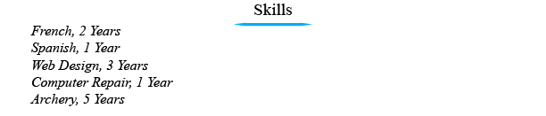

Cover Letter
A cover letter is the first thing seen by your potential employer.
Cover letters have a specific format (as it is a letter).
Cover letters are left vague, and really are a template to be changed based on which job you are applying to.

Education
If you are a student or a younger individual, it may help to include your GPA in your resume.
Also add any letters of recommendation you've received from teachers, or administration.

Experience
The next thing that most include are their past experience in a particular field or in general.
List your years of experience as well.
Activities
Employers want to know what kind of person you are,
adding activities that you have invested time into will help them understand your character.
Also add the years you've invested in these as well.
Skills
Include your Skills, these could be directly or indirectly useful in your particular field of work.
References
One of the most important parts of proving to your employer that you are a
trustable individual is for them to hear that from others.
When you list references be sure to include a full name,
a personal/home/business phone with proper times to contact them.